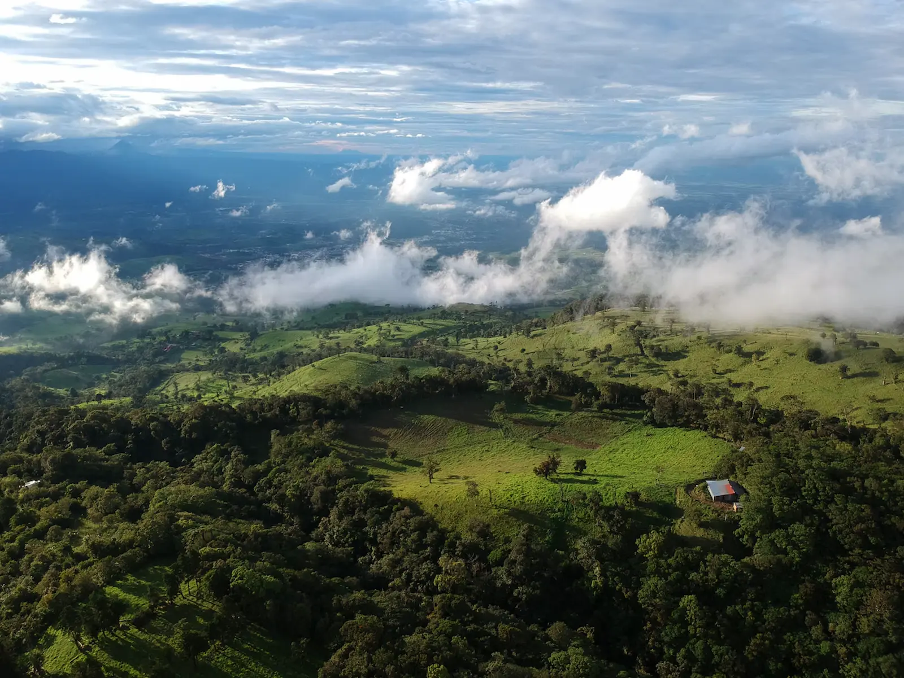

Data
Area: 51,100 sq km
Population: Approximately 5.2 million
Capital: San José
Language: Spanish
Currency: Costa Rican colón
Time Zone: UTC-6
Weather

Temperature: 28 °C
Conditions: Partly Cloudy
Wind: 15 km/h
Wind Chill: N/A